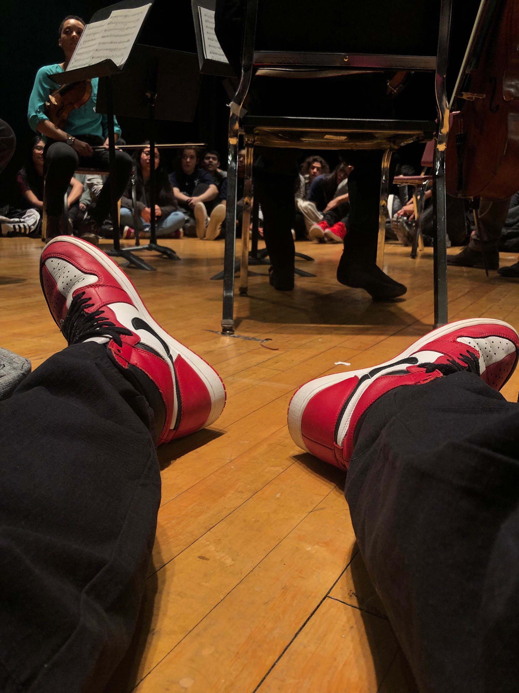

Hello my name is Kevin Pintado I am born and raised from Queens, New York.Its my first year here at City Tech I am currently majoring in Emerging Media Technology in Game Design and Interactive Media,funny thing is I never actually been at the campus. But I do enjoy the virtual experience, I like a lot of having to do with creativity in the medias and making a website is something I always found ammusing and having the experience is something I can now mark off as one of my accomplished goals. I like making beats and sounds, have always wanted to make beats for famous artists and definetley enjoy making beats. I as well know how to play the electric guitar and the drums, I definetley plan on continuing with coding as its something I really enjoyed this semester.